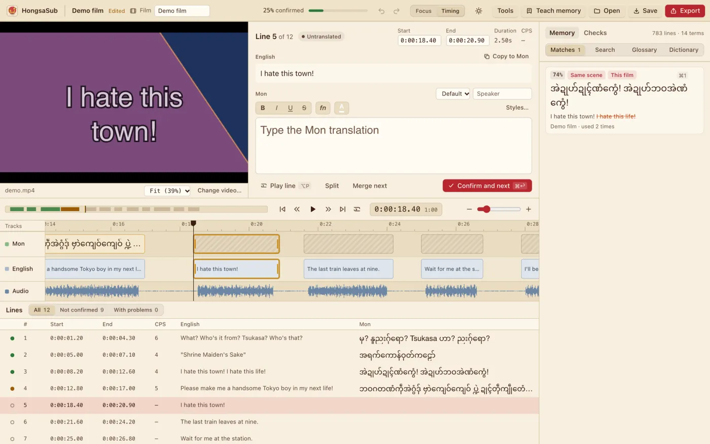
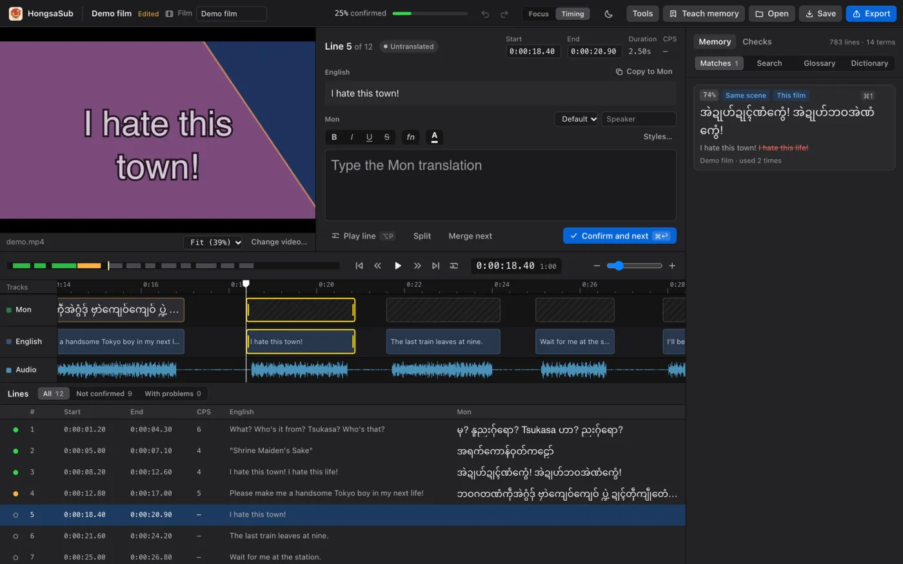

The subtitle editor that remembers your Mon.
Translate film subtitles from English into Mon (ဘာသာမန်) beside the playing video. Every line you confirm goes into a translation memory, so the same or a similar line is never translated twice, in this film or the next one.
Free and open source, MIT or Apache-2.0. On Windows and Linux, build it from source. Source on GitHub
I hate this town!
I hate this town! I hate this life!
Offered by memory: အဲဍုဟ်ဍုၚ်ဏံကွေံ! အဲဍုဟ်ဘဝအဲဏံကွေံ!
Memory found a 74% match from the same scene.
-
Itomori, the Town that Vanished
အိထဵုမဵုရိ, ဍုၚ်သုန်ဂြံ ကၠေံဗ္ဒမ်အာ
100%Your Name · used once -
I hate this town! I hate this life!
အဲဍုဟ်ဍုၚ်ဏံကွေံ! အဲဍုဟ်ဘဝအဲဏံကွေံ!
100%Your Name · used once -
What? Who's it from? Tsukasa? Who's that?
မု? နူညးဂှ်ရော? Tsukasa ဟာ? ညးဂှ်ရော?
100%Your Name · used once -
Please make me a handsome Tokyo boy in my next life!
ဘဝဂတဏံကဵုအဲဂွံဒှ် ဗၠာဲကျေဝ်ကျေဝ် ပ္ဍဲ ဍုၚ်တဵုကျဵုတေံညိ!
100%Your Name · used once -
Comet to pass by in a month: visible to the naked eye
တၟအ်စက္ကဝါတံ တတ်ပြဟ်လ္တူဍုၚ်ပိုဲတုဲ: ပိုဲဆဵုညာတ်နကဵုမတ်ပိုဲမာန်ဏောၚ်
100%Your Name · used once
Every match shows its reasons.
Matches, terms and differences stay in view beside the line you are translating, never behind a click. You decide in a glance whether your old line fits the new one.
- Scores and word diffs. See exactly which English words changed since you last translated a line like this one.
- Same scene, this film. Context tags tell you when a match comes from the lines around it or from the same film.
- Fill from memory. Fill every untranslated line the memory already knows as a draft. You choose exact, 95% or 85%, and one undo removes them all.
- Teach memory from finished work. Pair an English subtitle with your finished Mon one by timing, review the doubtful pairs, and add them.
- Glossary and dictionary. Keep agreed names and places, and look up any word in the built-in MonDict of 26,000 words.
အဲဍုဟ်ဍုၚ်ဏံကွေံ! အဲဍုဟ်ဘဝအဲဏံကွေံ!
I hate this town! I hate this life!
Timed to the picture.
The film plays beside the line you are writing, with its waveform and the Mon and English tracks underneath. Drag a line or its edges and it snaps to its neighbours, the playhead, and where speech starts and stops.


- Video preview. Styled captions over the film, zoom from 25% to 200%. MKV and HEVC films are converted once with ffmpeg, then cached.
- Waveform timeline. Mon, English and audio on three tracks. Untranslated lines show as hatched outlines, so gaps are easy to find.
- Shift, split, merge. Move every timing for a different release, split long lines and merge short ones, with undo for each change.
Check before you ship.
HongsaSub reads the whole film for the mistakes viewers notice. Most problems have a one-click fix.
Mon spell-check
Mon text is split into syllables and matched against the dictionary, so typos such as a doubled final consonant are underlined as you type. Words you use often in your memory are learned automatically.
Session pace
See lines per hour and an estimate of the time left in the film.
- Reading speed Characters per second over the limit, counting Mon base characters only.
- Line length and rows Lines too long for the screen, or too many rows in one caption.
- Time on screen Captions shown too briefly to read, or long after the speech ends.
- Overlaps and small gaps Captions that collide or flicker between each other.
- Tags and spaces Broken formatting tags and stray spaces.
- Numbers Numbers in Mon that differ from the English line.
- Glossary consistency An agreed term translated differently from one line to the next.
Your hands stay on the keys.
Routine work never needs the mouse. Confirm, move, play the line and use a match without looking away from the film.
- ⌥↑ ⌥↓Move between lines
- ⌥PPlay the current line
- SpacePlay or pause
- ⌘Z ⌘⇧ZUndo and redo
- ⌘B ⌘I ⌘UBold, italic, underline
- ⌘DLook up the selected word
- ⌘GAdd the selection to the glossary
- ⌘FSearch the memory
- ⌘⇧HFind and replace
- ⌘⇧FSwitch between Focus and Timing
- ⌘S ⌘O ⌘ESave, open, export
Get HongsaSub.
Version 1.0 for macOS is signed and notarized by Apple. Open the downloaded .dmg and drag HongsaSub into Applications. On Windows and Linux, build it from source.
Your translation memory, glossary, style library and word list stay on your computer, in the app's data folder. Nothing is sent anywhere.
To build from source
- Rust (stable)
- Node.js 20 or later and pnpm
- The Tauri 2 prerequisites for your system
-
Install on a Mac
Download HongsaSub 1.0
For video playback and waveforms, also install ffmpeg, for example with
brew install ffmpeg. Without it you can still translate and export. All releases -
Run it from source
git clone https://github.com/TaoMonLae/hongsasub.git cd hongsasub pnpm install pnpm tauri dev -
Build the app
pnpm tauri buildThe installer is written to
target/release/bundle/. -
Help it grow
Bug reports, Mon language corrections and pull requests are welcome. Read the contributing guide.